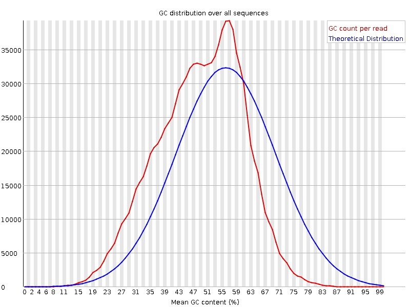

Module 1: Introduction to ChIP Sequencing and Analysis
Lab
Common Tools of the Trade
Explaination of Tools
BWA Genomic Sequence Read alignment tool
PICARD Toolkit for BAM file manipulation
SAMTOOLS Toolkit for BAM file manipulation
BEDTOOLSToolkit for BED/BEDGRAPH file manipulation
MACS2 Enriched region identifier for ChIP-seq
[UCSCtools])(http://genome.ucsc.edu/goldenPath/help/bigWig.html) Manipulation of Wigs and Bed/Bedgraph to binary forms
Resource Files
- BWA INDEX:
- ~/CourseData/EPI_data/Module1/BWA_index/
- Enhancer file.bed:
- ~/CourseData/EPI_data/Module1/QC_resources/
- download various state7 and merge https://egg2.wustl.edu/roadmap/data/byFileType/chromhmmSegmentations/ChmmModels/coreMarks/jointModel/final/
- TSS.bed:
- ~/CourseData/EPI_data/Module1/QC_resources/
- Generated by downloading Ensemblv79 GTF convert to Bed +/-2kb of TSS. See https://www.biostars.org/p/56280/
- HOX regions.bed
- ~/CourseData/EPI_data/Module1/QC_resources/
- Generated by downloading Ensemblv79 GTF convert to Bed then selecting for HOX
Hg38 Black list regions - ~/CourseData/EPI_data/Module1/QC_resources/ - https://www.encodeproject.org/files/ENCFF356LFX/@@download/ENCFF356LFX.bed.gz
Resource Files
- CEMT Pooled Breast Basal
- ~/CourseData/EPI_data/Module1/CHEERC_resources
- https://epigenomesportal.ca/tracks/CEEHRC/hg38/69069.CEEHRC.CEMT0035.H3K27ac.peak_calls.bigBed
- CEMT Pooled Breast Basal
- CEMT Pooled Breast Basal
- ~/CourseData/EPI_data/Module1/CHEERC_resources https://epigenomesportal.ca/tracks/CEEHRC/hg38/69063.CEEHRC.CEMT0035.H3K27me3.peak_calls.bigBed
- CEMT Pooled Breast Basal
- CEMT Pooled Breast Basal
- ~/CourseData/EPI_data/Module1/CHEERC_resources https://epigenomesportal.ca/tracks/CEEHRC/hg38/69054.CEEHRC.CEMT0035.H3K4me1.peak_calls.bigBed
- CEMT Pooled Breast Basal
- CEMT Pooled Breast Basal
- ~/CourseData/EPI_data/Module1/CHEERC_resources https://epigenomesportal.ca/tracks/CEEHRC/hg38/69057.CEEHRC.CEMT0035.H3K4me3.peak_calls.bigBed
- CEMT Pooled Breast Basal
- CEMT Pooled Breast Basal
- CEMT Pooled Breast Stromal
- ~/CourseData/EPI_data/Module1/CHEERC_resources
- https://epigenomesportal.ca/tracks/CEEHRC/hg38/69088.CEEHRC.CEMT0036.H3K27ac.peak_calls.bigBed
- CEMT Pooled Breast Stromal
- CEMT Pooled Breast Stromal
- ~/CourseData/EPI_data/Module1/CHEERC_resources
- https://epigenomesportal.ca/tracks/CEEHRC/hg38/69082.CEEHRC.CEMT0036.H3K27me3.peak_calls.bigBed
- CEMT Pooled Breast Stromal
- CEMT Pooled Breast Stromal
- ~/CourseData/EPI_data/Module1/CHEERC_resources
- https://epigenomesportal.ca/tracks/CEEHRC/hg38/69073.CEEHRC.CEMT0036.H3K4me1.peak_calls.bigBed
- CEMT Pooled Breast Stromal
- CEMT Pooled Breast Stromal
- ~/CourseData/EPI_data/Module1/CHEERC_resources
- https://epigenomesportal.ca/tracks/CEEHRC/hg38/69076.CEEHRC.CEMT0036.H3K4me3.peak_calls.bigBed
- CEMT Pooled Breast Stromal
- CEMT Pooled Breast Stromal
- CEMT Pooled Breast Luminal
- ~/CourseData/EPI_data/Module1/CHEERC_resources
- https://epigenomesportal.ca/tracks/CEEHRC/hg38/69107.CEEHRC.CEMT0037.H3K27ac.peak_calls.bigBed
- CEMT Pooled Breast Luminal
- CEMT Pooled Breast Luminal
- ~/CourseData/EPI_data/Module1/CHEERC_resources
- https://epigenomesportal.ca/tracks/CEEHRC/hg38/69101.CEEHRC.CEMT0037.H3K27me3.peak_calls.bigBed
- CEMT Pooled Breast Luminal
- CEMT Pooled Breast Luminal
- ~/CourseData/EPI_data/Module1/CHEERC_resources
- https://epigenomesportal.ca/tracks/CEEHRC/hg38/69092.CEEHRC.CEMT0037.H3K4me1.peak_calls.bigBed
- CEMT Pooled Breast Luminal
- CEMT Pooled Breast Luminal
- ~/CourseData/EPI_data/Module1/CHEERC_resources
- https://epigenomesportal.ca/tracks/CEEHRC/hg38/69095.CEEHRC.CEMT0037.H3K4me3.peak_calls.bigBed
- CEMT Pooled Breast Luminal
- CEMT Pooled Breast Luminal
- CEMT Pooled Breast Luminal Progenitor
- ~/CourseData/EPI_data/Module1/CHEERC_resources
- https://epigenomesportal.ca/tracks/CEEHRC/hg38/69126.CEEHRC.CEMT0038.H3K27ac.peak_calls.bigBed
- CEMT Pooled Breast Luminal Progenitor
- CEMT Pooled Breast Luminal Progenitor
- ~/CourseData/EPI_data/Module1/CHEERC_resources
- https://epigenomesportal.ca/tracks/CEEHRC/hg38/69120.CEEHRC.CEMT0038.H3K27me3.peak_calls.bigBed
- CEMT Pooled Breast Luminal Progenitor
- CEMT Pooled Breast Luminal Progenitor
- ~/CourseData/EPI_data/Module1/CHEERC_resources
- https://epigenomesportal.ca/tracks/CEEHRC/hg38/69111.CEEHRC.CEMT0038.H3K4me1.peak_calls.bigBed
- CEMT Pooled Breast Luminal Progenitor
- CEMT Pooled Breast Luminal Progenitor
- ~/CourseData/EPI_data/Module1/CHEERC_resources
- https://epigenomesportal.ca/tracks/CEEHRC/hg38/69114.CEEHRC.CEMT0038.H3K4me3.peak_calls.bigBed
- CEMT Pooled Breast Luminal Progenitor
- CEMT Pooled Breast Luminal Progenitor
Module 1. BWA Alignment + BAM Post-processing
- Have a genome reference file ready (DONE)
- Index genome reference file (DONE)
- Run quality Check
- Run alignment
- Coordinate Sort alignment File
- Duplicate marking alignment
- Flagstats
- Clean up
Setup
mkdir ~/workspace/{alignments,fastqc}1. Make a reference directory and download appropriate fasta reference @ https://hgdownload.cse.ucsc.edu/goldenpath/ (https://hgdownload.soe.ucsc.edu/goldenPath/hg38/bigZips/hg38.fa.gz). For the live tutorial this step was done for you. We will be using a shortened version containining only chr19
Code:
mkdir ~/CourseData/BWA_index
wget https://hgdownload.soe.ucsc.edu/goldenPath/hg38/bigZips/hg38.fa.gz -O ~/CourseData/BWA_index/
gunzip ~/CourseData/EPI_data/Module1/BWA_index/hg38.fa.gz2 .Index Fasta using BWA. For the live tutorial, this step was done for you.
Code:
bwa index ~/CourseData/EPI_data/Module1/BWA_index/chr19.hg38_no_alt.fa
ls ~/CourseData/EPI_data/Module1/BWA_index/ -lthOutput:
total 155M
8126488 -rw-rw-r-- 1 ubuntu ubuntu 28M Sep 7 19:22 chr19.hg38_no_alt.fa.sa
8126486 -rw-rw-r-- 1 ubuntu ubuntu 108 Sep 7 19:22 chr19.hg38_no_alt.fa.amb
8126485 -rw-rw-r-- 1 ubuntu ubuntu 153 Sep 7 19:22 chr19.hg38_no_alt.fa.ann
8126484 -rw-rw-r-- 1 ubuntu ubuntu 14M Sep 7 19:22 chr19.hg38_no_alt.fa.pac
8126487 -rw-rw-r-- 1 ubuntu ubuntu 56M Sep 7 19:22 chr19.hg38_no_alt.fa.bwt
8126483 -rw-rw-r-- 1 ubuntu ubuntu 57M Sep 7 18:36 chr19.hg38_no_alt.fa3. Run Quality Check
Code:
mkdir -p ~/workspace/fastqc
fastq_file_A=~/CourseData/EPI_data/Module1/MCF10A_resources/R1_input.fastq.gz
fastq_file_B=~/CourseData/EPI_data/Module1/MCF10A_resources/R1_h3k27ac.fastq.gz
fastqc ${fastq_file_A} -o ~/workspace/fastqc
fastqc ${fastq_file_B} -o ~/workspace/fastqcOutput:
Started analysis of R1_input.fastq.gz
Approx 5% complete for R1_input.fastq.gz
Approx 10% complete for R1_input.fastq.gz
Approx 15% complete for R1_input.fastq.gz
Approx 20% complete for R1_input.fastq.gz
Approx 25% complete for R1_input.fastq.gz
Approx 30% complete for R1_input.fastq.gz
Approx 35% complete for R1_input.fastq.gz
Approx 40% complete for R1_input.fastq.gz
Approx 45% complete for R1_input.fastq.gz
Approx 50% complete for R1_input.fastq.gz
Approx 55% complete for R1_input.fastq.gz
Approx 60% complete for R1_input.fastq.gz
Approx 65% complete for R1_input.fastq.gz
Approx 70% complete for R1_input.fastq.gz
Approx 75% complete for R1_input.fastq.gz
Approx 80% complete for R1_input.fastq.gz
Approx 85% complete for R1_input.fastq.gz
Approx 90% complete for R1_input.fastq.gz
Approx 95% complete for R1_input.fastq.gz
Analysis complete for R1_input.fastq.gzComment:
Check out the HTML file produced!
Note the GC distribution of Input VS H3K27ac
H3K27ac

4. Run Alignment
Code:
mkdir -p ~/workspace/alignments
ref=~/CourseData/EPI_data/Module1/BWA_index/chr19.hg38_no_alt.fa
read1=~/CourseData/EPI_data/Module1/MCF10A_resources/R1_input.fastq.gz
read2=~/CourseData/EPI_data/Module1/MCF10A_resources/R2_input.fastq.gz
sample=MCF10A_input_chr19
bwa mem -M -t 4 ${ref} ${read1} ${read2} 2>~/workspace/alignments/alignment.log | samtools view -hbS -o ~/workspace/alignments/${sample}.bamOutput:
Check log
Code Breakdown:
mkdir -p ~/workspace/alignments # Make working directory
ref=~/CourseData/EPI_data/Module1/BWA_index/chr19.hg38_no_alt.fa # Preset set variables
read1=~/CourseData/EPI_data/Module1/MCF10A_resources/R1_input.fastq.gz
read2=~/CourseData/EPI_data/Module1/MCF10A_resources/R2_input.fastq.gz
sample=MCF10A_input_chr19
bwa mem -M -t 4 ${ref} ${read1} ${read2} 2>~/workspace/alignments/alignment.log # Alignment step {"-t 2":Peform alignment using four threads. Our tutorial uses m5.xlarge therefore provides four cores,"-M":mark short split hits as secondary}
| samtools view -hbS -o ~/workspace/alignments/${sample}.bam # Converts SAM to BAM format {"h":Include Header, "b": output BAM, "S":detect input format}5. Coordinate Sort Alignment File
Code:
sample=MCF10A_input_chr19
samtools sort ~/workspace/alignments/${sample}.bam -o ~/workspace/alignments/${sample}.sorted.bam
samtools view ~/workspace/alignments/${sample}.bam | head
samtools view ~/workspace/alignments/${sample}.sorted.bam | headOutput: Output from ~/workspace/alignments/MCF10A_input_chr19.bam:
HS10_346:2:1101:3349:1883 83 chr19 49469101 60 75M = 49468882 -294 CTTGACAAGAAGGTTTTGAGGCCCCGCCCTTAGGACTCAAGTTACTAAGGAAGAGGCTGTCCTTAGCAACAGGGN DEEDDDDDDDDDDDDDDDDDDDFJJJJJJJJJJJJJJJJIIIIIIJJJJJJJJJJJJJIHJJHHHHHFFFFD=1# NM:i:1 MD:Z:74G0 MC:Z:75M AS:i:74 XS:i:0
HS10_346:2:1101:3349:1883 163 chr19 49468882 60 75M = 49469101 294 CCAGCAGGCCTGGCCAACGTGGTGACAGGAGACCGGGACCATCTGACCCGCTGCCTGGCCTTGCACCAAGACGTC CCCFFFFFGHGHGIJJJJJFHIEHIIJJJICHHIIGGIJGIJJIJJJJHGBEDDEEDDDDDDDCCDCDDDDDDBD NM:i:0 MD:Z:75 MC:Z:75M AS:i:75 XS:i:0
HS10_346:2:1101:3408:1953 83 chr19 23790237 60 75M = 23790104 -208 TCCACCCGCCTAGGCTTCCCAAAGTGGTGGGATTACAGACGTGAGCCACTGGACCCGGCCTGATTTTCTCTTGAN BDB9DDDEEFFFFFHHHHEJJJJJJJJIJJJJJJGIJJJIIJJJJJHGJJJIHJJJJJJJJJHHHHHFFFFD=1# NM:i:2 MD:Z:47G26A0 MC:Z:5M1I69M AS:i:69 XS:i:35
HS10_346:2:1101:3408:1953 163 chr19 23790104 60 5M1I69M = 23790237 208 ATTCTCCTGTCTCAGTCTCCTGAGTAGCTGGGATTACAGGCGCCCGCCACTGTGCCCGGCTACTTTTTGTATTTT CCCFFFFFDFFHHJJ?FHGIJJEHEFHIIGJJEGGIIFIIGHIJIJJJJIFIGJJIGGHEDEFEFEEED?DCFEE NM:i:1 MD:Z:74 MC:Z:75M AS:i:69 XS:i:50
HS10_346:2:1101:11940:1853 99 chr19 42651286 60 75M = 42651536 325 NTTTCTCCATCAACTTAGCTGGCAGCTCCTGTCCCCAGCAGCATCAGAGGCCCCATGAAAAGAGCTCCAGCAGGG #1=DFFFFHHHHHJJJJJJJJJIJGIJJJIIIIJJJJIJJJJJJJJJJJJJJJJJJIJIJJJJJHHHHHFFFFFD NM:i:1 MD:Z:0G74 MC:Z:75M AS:i:74 XS:i:31
HS10_346:2:1101:11940:1853 147 chr19 42651536 60 75M = 42651286 -325 GGGAGGAGAGAAGGGAACTGTAGGCCAATGGCTTTATTGGGTCTAGGGTGTTATTGACAGGTTTCCAGAAGGGAG HHHHJIJJJJJJIJIGHJJJJJJIHJJJJJIJJJJJJJJJJIGIJJJJJIHFCCCJJJJJJJHHHHHFFFFFCCC NM:i:0 MD:Z:75 MC:Z:75M AS:i:75 XS:i:0
HS10_346:2:1101:20208:1926 83 chr19 5876554 60 75M = 5876421 -208 GCGGTGAGGCCATCTATGCCCCTCGTTGGGGTCCTGGTCTTCATTGGACACCCCAGCTCCTCCCTCAGCCTGGGN DDDDDDDDDDDEDDDDDDDDFFHHHJJJJJJJJJJJJJJJJJIJJIHDD:JJJJJJJJJJJJHHHHHFFFFD=4# NM:i:2 MD:Z:15G58C0 MC:Z:32M1D24M2I17M AS:i:69 XS:i:24
HS10_346:2:1101:20208:1926 163 chr19 5876421 60 32M1D24M2I17M = 5876554 208 GGGGCTCTCTTGCCCTCCCAGCCAGATCATCCTTCTACTGGCTCCTCCAACCACCCCTGTGCCCCTGATTCTAGG CCCFFFFFHHHHHJJJJJIJJJJJJJJJJIJIIJIJJJJJIJJJICHIGHHHIIJJJCGEGGHHH=DBEFFDDEE NM:i:3 MD:Z:32^T41 MC:Z:75M AS:i:58 XS:i:0
HS10_346:2:1101:21139:1859 83 chr19 41375797 60 75M = 41375616 -256 AGCAAGACCCCGTTTTTTAAAAAATAATAATAAAAAAAAAATCCGCCGGGCGCGGTTGCTCACGCCTGTAATCCN ####################################################################?<@?70# NM:i:4 MD:Z:13C29T12G17T0 MC:Z:75M AS:i:59 XS:i:28
HS10_346:2:1101:21139:1859 163 chr19 41375616 60 75M = 41375797 256 AACAAGCCAACACGCCTTCAGCACTCCTCCGCAAAAAAACACCCCTAAACAAAATAGGCCAGGCGCGGTGACTCA :+:=?;+<<A7=<)<1+1+22?@3@B>B>30?A04==AA#################################### NM:i:2 MD:Z:13C31A29 MC:Z:75M AS:i:65 XS:i:24Output from ~/workspace/alignments/$MCF10A_input_chr19.sorted.bam:
HS10_346:2:1304:19247:16557 117 chr19 60146 0 * = 60146 0 GTTGAGTAATTGCTGAGATGGGCAGTAGAGATGCTCAGGTCTGTGGTCCCTTTCCATCCCCACTTGATCTATTTT ########################################################################### MC:Z:54M21S AS:i:0 XS:i:0
HS10_346:2:1304:19247:16557 185 chr19 60146 60 54M21S = 60146 0 TACAAGGATAATCTGACCTGCAGGGTCGAGGAGTTGACGGTGCTGAGTTCCCTGGATGGCACCAAGATCGGCCCT DCCDDDCCCDCDECEEEFFFFHGHHIIHFGHIGGEIFAHCIEHGGIGHGHEHEDGEIIIHFG?HFFDDFFFD@@@ NM:i:0 MD:Z:54 AS:i:54 XS:i:0
HS10_346:2:1314:2495:92223 163 chr19 60167 60 75M = 60313 221 AGGGTCAAGGAGTTGACGGTGCTGAGTTCCCTGCACTCTCAGTAGGGACAGGCCCTATGCTGCCACCTGTACATG @@?DDDDDHHHHFGHJIJJFEHJJJJEIIIGHIJJJJGEIBHHGIJJIIJJJJJJJJIJJIJJJHGHHFDDFCEF NM:i:1 MD:Z:6G68 MC:Z:75M AS:i:70 XS:i:0
HS10_346:2:1207:4332:57794 99 chr19 60172 60 75M = 60350 253 CGAGGAGTTGACGGTGCTGAGTTCCCTGCACTCTCAGTAGGGACAGGCCCTATGCTGCCACCTGTACATGCTATC @C@FFDFDFFFHHIHIIJHHGGIIJGIEEHIJIJJJIJJIJJGIGHIHIHHJJJJJJJJIHHHEEHHHHFFFFFF NM:i:0 MD:Z:75 MC:Z:75M AS:i:75 XS:i:0
HS10_346:2:2315:10492:97635 121 chr19 60173 60 75M = 60173 0 GAGGAGTGGACGGTGCTGAGTTCCCTGCTCTCTCAGTAGGGACAGGCCCTATGCTGCCACCTGTACATGCTATCA ########################################################################### NM:i:3 MD:Z:7T20A45T0 AS:i:64 XS:i:0
HS10_346:2:2315:10492:97635 181 chr19 60173 0 * = 60173 0 AAAAATCGAAAATACTTTTAACAATTTGTATTTGATTTATAACTTTTAAACATTTTTATAATGACATTTAAAAAA IJIGIHFCBHEC=8GHJIIIHIEEEIHDGGHGIGIGGHGEEEGCIHHAC?HEGJJGJIIGHBHDDHHFFFFD@@@ MC:Z:75M AS:i:0 XS:i:0
HS10_346:2:1314:17241:18282 117 chr19 60211 0 * = 60211 0 CTCTGTGATCTTCTCCATGGCAGGATCTCCCAGCAGGTAAAGCAGAGCCGGAGCCAGGTGCAGGCCATTGGAGAG @CCD@@EEEHFHEA=HGGC@CF7=@@F;HF<CCBBDDB9DB@<>GG@E@HEIHACHDDHFDADF>HBDDDDB?@@ MC:Z:75M AS:i:0 XS:i:0
HS10_346:2:1314:17241:18282 185 chr19 60211 60 75M = 60211 0 GGGACAGGCCCTATGCTGCCACCTGTACATGCTATCTGAAGGACAGCCTCCAGGGCACACAGAGGATGGTATTTA ##AA=5;;BA;BB=(7.8/**)A7=909<A??BB????*A:7@11)22+3<3?3,33<2<=?CA<,C7?A?===: NM:i:0 MD:Z:75 AS:i:75 XS:i:0
HS10_346:2:1201:2781:75049 99 chr19 60221 60 75M = 60484 338 CTATGCTGCCACCTGTACATGCTATCTGAAGGACAGCCTCCAGGGCACACAGAGGATGGTATTTACACATGCACA CCCFFFFFHGGHHJJIJJJJJJJJJJJJJJJJJJJIIJJJJJGIJIIJJJJJIJJJJJJ@GIIJJJJIJHHHHHF NM:i:0 MD:Z:75 MC:Z:75M AS:i:75 XS:i:0
HS10_346:2:1314:2495:92223 83 chr19 60313 60 75M = 60167 -221 CAAGCACTTCACAACCCCTCATGATCACGTGCAGCAGACAAAGTGGCCTCTGCAGAGGGGGAACGGAGACCGGAG DCADDDDEEDCDFDHIIIEJJJJIJIHFHGGIEHGIHIIJJJJJJJIJIGIJIIJJJJJJIHFGHHHFDFFFCCC NM:i:1 MD:Z:41T33 MC:Z:75M AS:i:70 XS:i:0Code Breakdown:
Coordinate sortsComment:
Take a look at the coordinate sorted bam vs original. When we view, notice the coordinates in the sorted bam were altered6. Duplicate Marking Alignment
Code:
sample=MCF10A_input_chr19
java -jar /usr/local/picard/picard.jar MarkDuplicates I=~/workspace/alignments/${sample}.sorted.bam O=~/workspace/alignments/${sample}.dup_marked.sorted.bam M=~/workspace/alignments/${sample}.dup_marked.output.log ASSUME_SORTED=TRUE VALIDATION_STRINGENCY=LENIENT > ~/workspace/alignments/${sample}.dup_marked.error.logCode Breakdown:
java -jar \ # Requires java to intepret
/usr/local/picard/picard.jar \ #Point to toolkit
MarkDuplicates \ #Specify function from toolkit
I=~/workspace/alignments/${sample}.sorted.bam \ #Input
O=~/workspace/alignments/${sample}.dup_marked.sorted.bam \ #output
M=~/workspace/alignments/${sample}.dup_marked.output.log \ #Work log
ASSUME_SORTED=TRUE \ #B/C we already sorted this will be true
VALIDATION_STRINGENCY=LENIENT \ #Emit warnings but keep going if possible
> ~/workspace/alignments/{sample}.dup_marked.error.logOutput:
See log. Its a bit long but the breakdown as follows:
1. A summary of the command used (so we can check the parameters)
2. A metric rollup equivalent to the flagstat step run later on
3. A histogram where, Col 1 is expected coverage col 2 is actual
"In case of many duplicates, the second column will result in much lower values, indicating that sequencing more will not add proportionally to the obtained effective coverage."
https://github.com/broadinstitute/picard/issues/9177. Flagstats
Code:
sample=MCF10A_input_chr19
samtools flagstat ~/workspace/alignments/${sample}.dup_marked.sorted.bam > ~/workspace/alignments/${sample}.dup_marked.sorted.flagstatOutput:
1726243 + 0 in total (QC-passed reads + QC-failed reads)
34545 + 0 secondary
0 + 0 supplementary
64636 + 0 duplicates
1545613 + 0 mapped (89.54% : N/A)
1691698 + 0 paired in sequencing
845849 + 0 read1
845849 + 0 read2
1192976 + 0 properly paired (70.52% : N/A)
1330944 + 0 with itself and mate mapped
180124 + 0 singletons (10.65% : N/A)
0 + 0 with mate mapped to a different chr
0 + 0 with mate mapped to a different chr (mapQ>=5)Comment:
Run flagstat on MCF10A_input_chr19.sorted.bam. What are the differences?
Try running the alignment with MCF10A_H3K27ac_chr19!